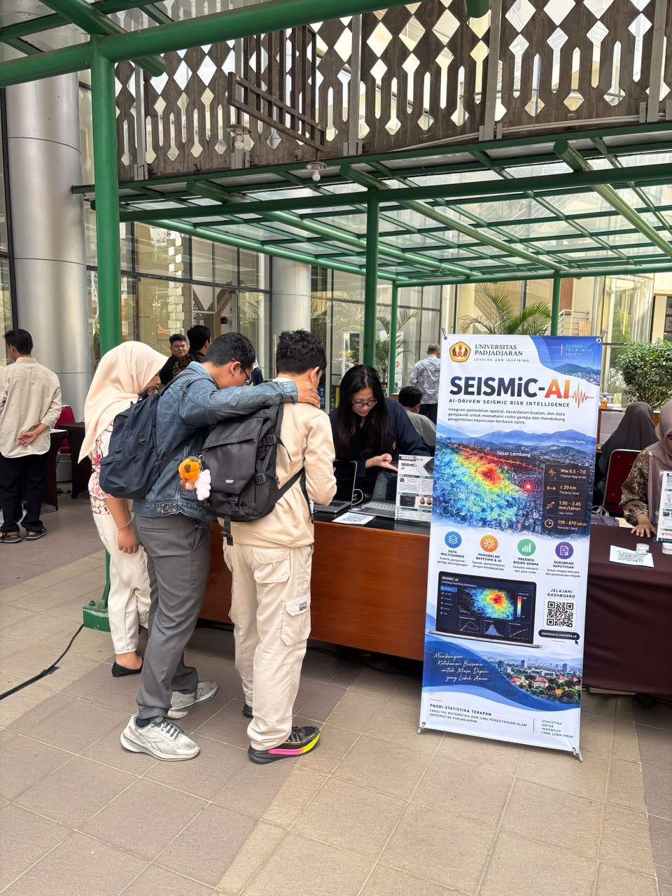
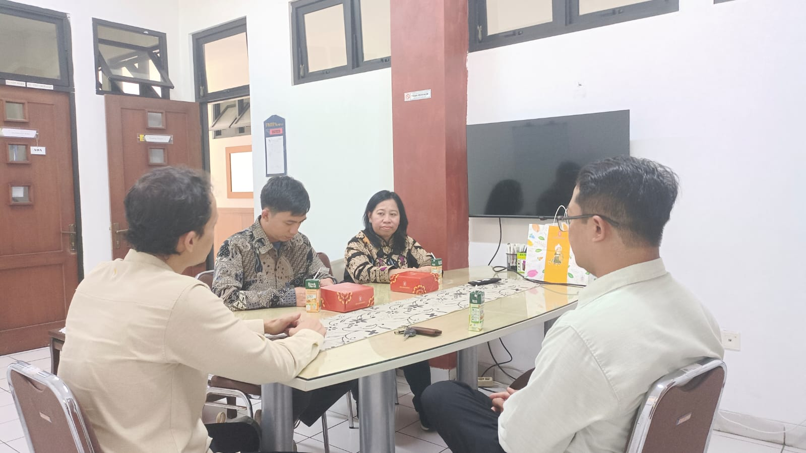

Momentum syukur dan langkah baru
JATINANGOR — Fakultas Matematika dan Ilmu Pengetahuan Alam (FMIPA) Universitas Padjadjaran merayakan puncak Dies Natalis ke-68 pada Kamis, 29 Oktober 2026, bertempat di Bale Sawala, Kampus Unpad Jatinangor. Perayaan ini menjadi momentum untuk mengapresiasi perjalanan panjang FMIPA dalam memajukan pendidikan, riset, inovasi, dan kemitraan yang berdampak bagi masyarakat.
Program Studi Magister (S2) Statistika Terapan FMIPA Unpad ikut ambil bagian dengan semangat kolaboratif. Partisipasi prodi diwujudkan melalui pameran karya inovasi SEISMIC-AI, keterlibatan mahasiswa dalam diseminasi hasil riset, serta penguatan komunikasi dengan lembaga mitra strategis, termasuk Dinas Komunikasi dan Informatika Jawa Barat dan Badan Pusat Statistik (BPS).
SEISMIC-AI hadir di panggung inovasi FMIPA
Salah satu kontribusi S2 Statistika Terapan dalam rangkaian Dies Natalis tahun ini adalah memperkenalkan SEISMIC-AI (AI-Driven Seismic Risk Intelligence), sebuah inisiatif yang mengintegrasikan pemodelan statistik spasial, kecerdasan buatan, dan informasi geospasial untuk membantu memahami risiko gempa serta mendukung pengambilan keputusan berbasis data.
Inisiatif ini dikembangkan melalui kolaborasi bersama Diskominfo Jawa Barat, dengan keterlibatan mahasiswa S1 Statistika dan S2 Statistika Terapan Unpad. Melalui demonstrasi langsung, pengunjung dapat mengenal bagaimana metode statistik dan teknologi AI diterjemahkan menjadi informasi yang lebih mudah dipahami.

Dialog kolaborasi dengan BPS Pusat
Sejalan dengan semangat Dies Natalis, S2 Statistika Terapan FMIPA Unpad juga menerima kunjungan perwakilan BPS Pusat sebagai bagian dari upaya mengembangkan kemitraan kelembagaan.
Pertemuan tersebut menjadi ruang diskusi mengenai peluang kerja sama ke depan, tidak hanya dalam bidang pendidikan, tetapi juga penelitian bersama dan pengabdian kepada masyarakat. Sinergi antara perguruan tinggi dan lembaga penyelenggara statistik resmi diharapkan dapat membuka ruang pembelajaran terapan, pengembangan metodologi, dan pemanfaatan data yang semakin relevan untuk kebijakan publik.
Dialog ini merupakan tahap penjajakan dan penguatan komunikasi; bentuk kerja sama lebih lanjut akan ditindaklanjuti oleh para pihak.

Rangkaian agenda inspiratif
Perayaan ke-68 menghadirkan ruang bertukar gagasan, apresiasi, dan penguatan jejaring FMIPA Unpad.
Galeri Kebersamaan 📸
Potret hangat perayaan, antusiasme pengunjung booth SEISMIC-AI, dan percakapan kolaboratif bersama BPS.
Dirgahayu FMIPA Universitas Padjadjaran! 🎉
Semoga semangat keilmuan, inovasi, dan kolaborasi terus tumbuh, menghadirkan karya yang bermanfaat bagi Jawa Barat, Indonesia, dan masyarakat luas.